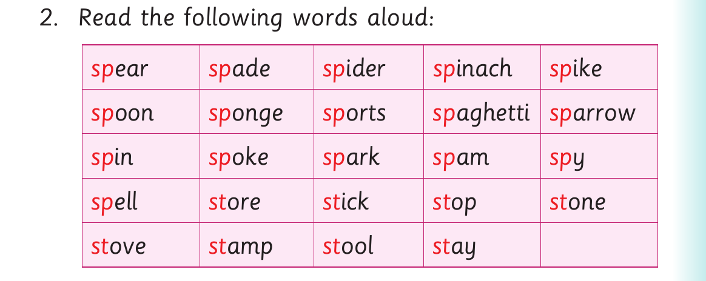

Words with sp and st consonants - continued

2. Read the following words aloud: sp ear sp ade sp ider sp inach sp ike sp oon sp onge sp orts sp aghetti sp arrow sp in sp oke sp ark sp am sp y sp ell st ore st ick st op st one st ove st amp st ool st ay
Activity 2
Read the following sentences aloud: (a) Our classroom has plenty of space. (b) I like food with spices. (c) We use a spade to mix sand with cement. (d) Stop reading the story now. (e) The stove has been stolen. (f) You can stay here and eat spaghetti.